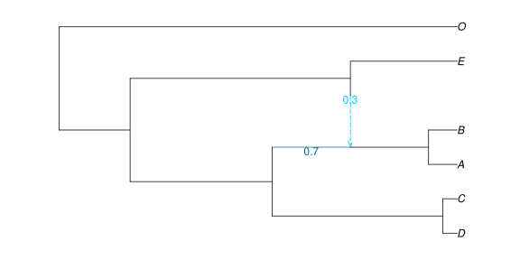
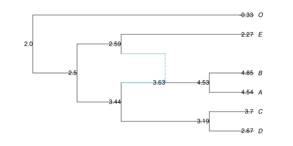
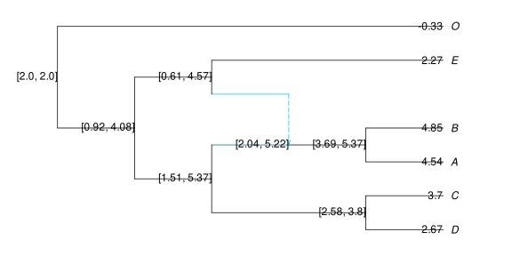
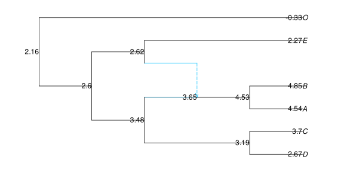
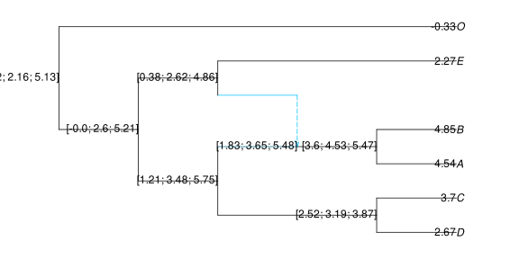
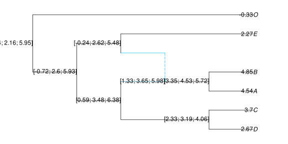
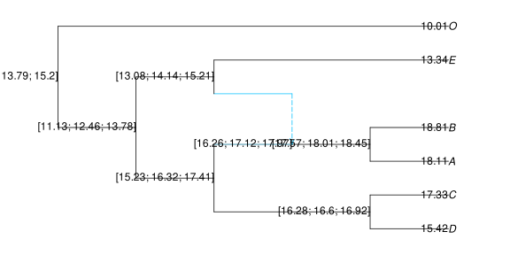
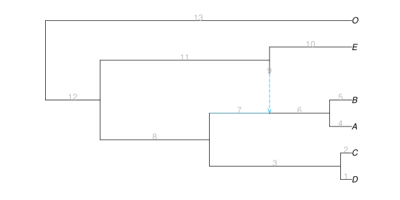

Continuous trait analysis
After inferring a phylogeny, we can take these phylogenetic relationships into account when studying the distribution of quantitative traits measured for extant species. This is the goal of phylogenetic comparative methods (PCM). With PhyloTraits, we can do so for a phylogeny that is either a tree, or a network with reticulations. More details can be found on the developments below in Bastide et al. 2018 [B18]
We assume a fixed network (which may be a tree), correctly rooted, with branch lengths proportional to calendar time. Below, we use a network that is time-consistent (all paths from the root to any given node have the same length) and ultrametric (all the tips are contemporary).
truenet = readnewick("((((D:0.4,C:0.4):4.8,((A:0.8,B:0.8):2.2)#H1:2.2::0.7):4.0,(#H1:0::0.3,E:3.0):6.2):2.0,O:11.2);");PhyloNetworks.HybridNetwork, Rooted Network
13 edges
13 nodes: 6 tips, 1 hybrid nodes, 6 internal tree nodes.
tip labels: D, C, A, B, ...
((((D:0.4,C:0.4):4.8,((A:0.8,B:0.8):2.2)#H1:2.2::0.7):4.0,(#H1:0.0::0.3,E:3.0):6.2):2.0,O:11.2);
We can plot the network thanks to package PhyloPlots, which uses RCall. The name function is only instrumental here, to ensure that the figure is saved in the correct directory when the documentation is built. We only show the commands to actually save the plot in this first example for the interested reader, but we will hide those in the rest of the chapter, for the sake of clarity.
using PhyloPlots, RCall
name(x) = joinpath("..", "assets", "figures", x)
R"svg"(name("truenet.svg"), width=8, height=4)
R"par"(mar=[0,0,0,0])
plot(truenet, useedgelength=true, showgamma=true);
R"dev.off()"
Model and variance matrix
Assuming that the network is known and that the continuous traits evolve under a Brownian Motion (BM) over time, it is possible to compute the expected variance covariance matrix between tip measurements. This can be done using function PhyloNetworks.vcv, whose syntax is inspired from the well known corresponding ape function.
julia> C = vcv(truenet)6×6 DataFrame Row │ D C A B E O │ Float64 Float64 Float64 Float64 Float64 Float64 ─────┼────────────────────────────────────────────────────── 1 │ 11.2 10.8 4.8 4.8 2.0 0.0 2 │ 10.8 11.2 4.8 4.8 2.0 0.0 3 │ 4.8 4.8 8.596 7.796 3.86 0.0 4 │ 4.8 4.8 7.796 8.596 3.86 0.0 5 │ 2.0 2.0 3.86 3.86 11.2 0.0 6 │ 0.0 0.0 0.0 0.0 0.0 11.2
The matrix is returned as a DataFrame, with columns named by the tips of the network to allow for easy identification. Each row also corresponds to a tip in the network, and rows are ordered in the same way as columns.
The computation of this matrix is based on the more general function PhyloNetworks.sharedpathmatrix. It is at the core of all the Phylogenetic Comparative Methods described below.
Phylogenetic regression
Assume that we measured three continuous traits in the data frame below. We want to study the impact of traits 1 and 2 on trait 3. To do that, we can perform a phylogenetic regression.
To make sure that data are mapped to the correct tip in the phylogeny, even though the tips might be ordered differently in the data frame compared to the phylogeny, our data needs to have a column with the names of the tips in the network. If this column is labeled tipnames, fitting the data will not require an extra option.
using DataFrames
dat = DataFrame(
trait1 = [ 2.668, 3.696, 4.541, 4.846, 2.268, -0.331],
trait2 = [-3.008, -4.146, -2.338, 0.655, -3.339, -4.566],
trait3 = [15.424, 17.333, 18.115, 18.81, 13.337, 10.012],
tipnames = ["D", "C", "A", "B", "E", "O"]
)Phylogenetic regression / ANOVA is based on the GLM package, with the network as an extra argument, using function phylolm.
using StatsModels # for statistical model formulas
fitTrait3 = phylolm(@formula(trait3 ~ trait1 + trait2), dat, truenet)PhyloNetworkLinearModel
Formula: trait3 ~ 1 + trait1 + trait2
Model: Brownian motion
Parameter Estimates, using REML:
phylogenetic variance rate: 0.0497118
Coefficients:
───────────────────────────────────────────────────────────────────────────
Coef. Std. Error t Pr(>|t|) Lower 95% Upper 95%
───────────────────────────────────────────────────────────────────────────
(Intercept) 10.1914 0.583065 17.48 0.0004 8.33586 12.047
trait1 1.80638 0.131992 13.69 0.0008 1.38632 2.22643
trait2 0.00938428 0.0761694 0.12 0.9097 -0.233021 0.251789
───────────────────────────────────────────────────────────────────────────
Log Likelihood: -5.2429275733
AIC: 18.4858551467
The REML criterion is used by default, for estimating the variance parameter(s). ML could be used instead with option reml=false. From this, we can see that the intercept, the coefficient for trait 1 and the variance of the noise are correctly estimated (given that there are only 6 taxa). In addition, the Student T test for the coefficient associated with trait 2 has a high p-value, which means that this coefficient is not significantly different from 0. This is consistent with the way we simulated trait 3.
The function returns an object of type PhyloNetworkLinearModel<:GLM.LinPredModel. It is a subtype of the GLM type LinPredModel, which means that all base functions from Julia StatsBase can be applied to it. See the documentation for this type for a list of all functions that can be used. Some functions allow the user to retrieve directly the estimated parameters of the BM, and are specific to this object.
julia> sigma2_phylo(fitTrait3) # estimated variance of the BM0.0497117953656881julia> mu_phylo(fitTrait3) # estimated root value of the BM10.191436829060924
Ancestral state reconstruction
From known parameters
If we assume that we know the exact model of evolution that generated the traits, we can do ancestral trait reconstruction. Here, we simulated trait 1 ourselves (see next section), so we can use the true process with the true parameters. In other words, we can reconstruct the state at the internal nodes, given the values at the tips, the known value at the root (2) and the known BM variance (0.5).
ancTrait1 = ancestralreconstruction(truenet, dat.trait1, ParamsBM(2, 0.5))Function ancestralreconstruction creates an object with type ReconstructedStates. Several extractors can be applied to it:
julia> using StatsAPI, StatsBase # for predict and stderror()julia> predict(ancTrait1) # predictions13×2 DataFrame Row │ nodenumber prediction │ Int64 Float64 ─────┼──────────────────────── 1 │ -5 3.19235 2 │ -7 4.52957 3 │ 5 3.62793 4 │ -4 3.44066 5 │ -8 2.59224 6 │ -3 2.50005 7 │ -2 2.0 8 │ 1 2.668 9 │ 2 3.696 10 │ 3 4.541 11 │ 4 4.846 12 │ 6 2.268 13 │ 7 -0.331julia> stderror(ancTrait1) # associated standard errors7-element Vector{Float64}: 0.3123387589010663 0.42993324936477556 0.812157499454507 0.9859957884856942 1.0099199358487552 0.8070424194592417 0.0julia> predict(ancTrait1, interval=:prediction, level=0.90) # prediction interval (at level 90%)13×4 DataFrame Row │ nodenumber prediction lower upper │ Int64 Float64 Float64 Float64 ─────┼──────────────────────────────────────────── 1 │ -5 3.19235 2.67859 3.7061 2 │ -7 4.52957 3.82239 5.23674 3 │ 5 3.62793 2.29205 4.96381 4 │ -4 3.44066 1.81884 5.06247 5 │ -8 2.59224 0.93107 4.25341 6 │ -3 2.50005 1.17258 3.82751 7 │ -2 2.0 2.0 2.0 8 │ 1 2.668 2.668 2.668 9 │ 2 3.696 3.696 3.696 10 │ 3 4.541 4.541 4.541 11 │ 4 4.846 4.846 4.846 12 │ 6 2.268 2.268 2.268 13 │ 7 -0.331 -0.331 -0.331
We can plot the ancestral states or prediction intervals on the tree, using the nodelabel argument of the PhyloPlots.plot function.
plot(truenet, nodelabel=predict(ancTrait1, text=true), tipoffset=0.1);
ancInt = predict(ancTrait1, interval=:prediction, text=true) # format the prediction intervals for the plot
plot(truenet, nodelabel=ancInt[!,[:nodenumber,:interval]], tipoffset=0.1);
The PhyloTraits.predict function has an optional argument to state the level of the prediction interval. If not given, the default value is 0.95.
It is also possible to plot both the reconstructed state and the predicted value on the same plot, using the optional keyword argument combine. As shown below, we could also use the RCall method from the PhyloPlots.plot function.
ancInt = predict(ancTrait1, interval=:prediction, text=true, combine=true)
plot(truenet, nodelabel = ancInt[!,[:nodenumber,:interval]], tipoffset=0.1);These plots tend to be quite busy, even for small networks.
As we know the true ancestral states here, we can compare them to our estimation. In this example, we see that the 95% prediction (ancestral state reconstruction) intervals contain the true simulated value, at all ancestral nodes.
julia> pred = predict(ancTrait1, interval=:prediction);julia> DataFrame( lower = pred[1:7, :lower], # lower bound of 95% prediction interval trueValue = [3.312,4.438,3.922,3.342,2.564,1.315,2.0], # from sim1[:internalnodes] in next section upper = pred[1:7, :upper] # upper bound )7×3 DataFrame Row │ lower trueValue upper │ Float64 Float64 Float64 ─────┼────────────────────────────── 1 │ 2.58017 3.312 3.80452 2 │ 3.68691 4.438 5.37222 3 │ 2.03613 3.922 5.21973 4 │ 1.50814 3.342 5.37317 5 │ 0.612833 2.564 4.57165 6 │ 0.918271 1.315 4.08182 7 │ 2.0 2.0 2.0
From estimated parameters
In real applications though, we do not have access to the true parameters of the process that generated the data. We can estimate them using the previous function. To fit a regular BM, we just need to do a regression of trait 1 against a simple intercept:
fitTrait1 = phylolm(@formula(trait1 ~ 1), dat, truenet)We can then apply the ancestralreconstruction function directly to the fitted object:
ancTrait1Approx = ancestralreconstruction(fitTrait1)┌ Warning: These prediction intervals show uncertainty in ancestral values,
│ assuming that the estimated variance rate of evolution is correct.
│ Additional uncertainty in the estimation of this variance rate is
│ ignored, so prediction intervals should be larger.
└ @ PhyloTraits ~/work/PhyloTraits.jl/PhyloTraits.jl/src/ancestral_continuous.jl:312The prediction intervals ignore the fact that we estimated the process parameters, so they are less accurate and the function throws a warning. Note that this warning will only show once in a given julia session. The output is an object of the same ReconstructedStates type as earlier, and the same extractors can be applied to it:
plot(truenet, nodelabel = predict(ancTrait1Approx, text = true));
For convenience, the two steps described above (fitting against the intercept, and then do ancestral state reconstruction) can be done all at once with a single call of the function ancestralreconstruction on a DataFrame with the trait to reconstruct, and the tip labels:
datTrait1 = DataFrame(trait1 = dat[:,:trait1], tipnames = dat[:,:tipnames])
ancTrait1Approx = ancestralreconstruction(datTrait1, truenet)ancInt = predict(ancTrait1Approx, interval=:prediction, level=0.9, text=true, combine=true)
plot(truenet, nodelabel = ancInt[!,[:nodenumber,:interval]]);
This produces the exact same results. Here, we chose a level of 90% for the plotted prediction intervals.
Data imputation
Note that there is no theoretical difference between an internal node, for which we could not measure the value of the trait, and a missing value at a tip of the network. Consequently, the previous ancestralreconstruction function can be used to do data imputation. To see this, let's add some missing values in trait 1.
allowmissing!(datTrait1, :trait1)
datTrait1[2, :trait1] = missing; # second row: for taxon C
ancTrait1Approx = ancestralreconstruction(datTrait1, truenet)ancInt = predict(ancTrait1Approx, interval=:prediction, text=true, combine=true)
plot(truenet, nodelabel = ancInt[!,[:nodenumber,:interval]]);
A prediction interval is shown for the missing values.
With known predictors
At this point, it might be tempting to apply this function to trait 3 as a linear combination of trait 1 and a phylogenetic noise, to get a better ancestral state reconstruction via using its correlation with trait 1. However, this cannot be done directly:
ancTrait3 = ancestralreconstruction(fitTrait3) # throws an errorThis is because the model to fit the trait (a regression with one predictor and an intercept) used a predictor for which we don't know the ancestral states. The regression model accounted for that.
The only option we have is to provide the function with the predictor's ancestral states, if they are known. They are actually known in this toy example because we generated the data ourselves (see next section), so we can reconstruct our trait doing the following:
ancTrait3 = ancestralreconstruction(fitTrait3, # model with estimated coefs etc.
hcat(ones(7,1),
[ 3.312, 4.438, 3.922, 3.342, 2.564, 1.315, 2.0], # from sim1[:internalnodes]
[-3.62, -0.746, -2.217, -3.612, -2.052, -2.871, -2.0]) # from sim2[:internalnodes]
)ancInt = predict(ancTrait3, interval=:prediction, text=true, combine=true)
plot(truenet, nodelabel = ancInt[!,[:nodenumber,:interval]]);
where we provided the ancestral predictors as a matrix, containing the intercept, and the known predictor at internal nodes. We must be very careful with this function, as no check is done for the order of the predictors, or the order of their values that must be the same as the internal nodes of the phylogeny. As ancestral predictors are often unknown, the use of this functionality is discouraged.
Phylogenetic ANOVA
The phylolm function is based on the lm function from GLM. This means that it inherits from most of its features, and in particular, it can handle formulas with factors (discrete predictors) and interactions. For example, in lizards, we might want to do a regression of toe length on body length and the region where each species is found, where this region is coded into 4 categories (say). We might also want to include an interaction effect between body length and region. (This model is just meant to show the possibilities of the function).
To illustrate the use of categorical predictors of particular interest in a network with reticulations, let's assume that some transgressive evolution took place after the hybridization event, so that species "A" and "B" have a larger mean compared to the others (see [B18] for transgressive evolution after a reticulation event).
δ = 5.0; # value of heterosis
underHyb = [n == "A" || n == "B" for n in dat[:,"tipnames"]] # tips under hybrid
underHyb
for i in 1:nrow(dat)
underHyb[i] && (dat[i,:trait3] += δ) # add delta to tips A and B
endjulia> select(dat, [:trait3, :tipnames]) # trait3 changed: +5 added to A and B by previous loop6×2 DataFrame Row │ trait3 tipnames │ Float64 String ─────┼─────────────────── 1 │ 15.424 D 2 │ 17.333 C 3 │ 23.115 A 4 │ 23.81 B 5 │ 13.337 E 6 │ 10.012 O
The categorical variable underHyb separates tips "A" and "B" from the others. We need to consider it as a factor, not a numerical variable. One way is to make it a vector of strings, as done below. An alternative way would be to add and use the CategoricalArrays package, then transform the column underHyb to be categorical (shown in commments).
dat.underHyb = string.(underHyb); # adds a new column
# using CategoricalArrays
# transform!(dat, :underHyb => categorical, renamecols=false)julia> dat6×5 DataFrame Row │ trait1 trait2 trait3 tipnames underHyb │ Float64 Float64 Float64 String String ─────┼─────────────────────────────────────────────── 1 │ 2.668 -3.008 15.424 D false 2 │ 3.696 -4.146 17.333 C false 3 │ 4.541 -2.338 23.115 A true 4 │ 4.846 0.655 23.81 B true 5 │ 2.268 -3.339 13.337 E false 6 │ -0.331 -4.566 10.012 O false
Now we can include this reticulation variable in the regression.
fitTrait = phylolm(@formula(trait3 ~ trait1 + underHyb), dat, truenet)PhyloNetworkLinearModel
Formula: trait3 ~ 1 + trait1 + underHyb
Model: Brownian motion
Parameter Estimates, using REML:
phylogenetic variance rate: 0.0488024
Coefficients:
───────────────────────────────────────────────────────────────────────────
Coef. Std. Error t Pr(>|t|) Lower 95% Upper 95%
───────────────────────────────────────────────────────────────────────────
(Intercept) 10.1488 0.515463 19.69 0.0003 8.50838 11.7892
trait1 1.83155 0.158081 11.59 0.0014 1.32846 2.33463
underHyb: true 4.8284 0.642348 7.52 0.0049 2.78416 6.87264
───────────────────────────────────────────────────────────────────────────
Log Likelihood: -3.0738309703
AIC: 14.1476619407
In this case, the categorical variable indicating which tips are descendants of the reticulation event is indeed relevant, and the transgressive evolution effect is recovered.
This is a very simple example of how to include transgressive evolution, but some general functions to test for it, on networks with more than one hybrid, are also available.
Pagel's Lambda
One classical question about trait evolution is the amount of "phylogenetic signal" in a trait or in the residuals of a linear relationship, that is, the importance of the tree structure to explain variation in the observed traits (or in the residuals). One way of measuring that is to use Pagel's lambda transformation of the branch lengths [P99]. This model assumes a BM on a tree where the internal branches are multiplied by a factor λ, while the external branches are modified so that the total height of the tree is constant. Hence, λ varies between 0 (the tree has no influence on the data) and 1 (the tree is unchanged). Using the same branch length transformations, this model can be straightforwardly extended to phylogenetic networks.
This transformation assumes a time-consistent and ultrametric phylogeny, in which all paths from the root to any tip has the same length: the "height" of the phylogeny referred to above.
We can illustrate this with the predictor trait we used earlier. We use the same function as before, only indicating the model we want to use:
fitPagel = phylolm(@formula(trait1 ~ 1), dat, truenet, model="lambda")PhyloNetworkLinearModel
Formula: trait1 ~ 1
Model: Pagel's lambda
Parameter Estimates, using REML:
phylogenetic variance rate: 0.447101
Lambda: 0.967759
Coefficients:
─────────────────────────────────────────────────────────────────────
Coef. Std. Error t Pr(>|t|) Lower 95% Upper 95%
─────────────────────────────────────────────────────────────────────
(Intercept) 2.1801 1.29435 1.68 0.1529 -1.14715 5.50734
─────────────────────────────────────────────────────────────────────
Log Likelihood: -9.4622859932
AIC: 24.9245719865
As this trait 1 was indeed generated according to a plain BM on the phylogeny (see next section), the estimated λ should be close to 1. It can be extracted with function lambda_estim:
julia> lambda_estim(fitPagel)0.9677585415846363
For models in which the covariance is estimated, like Pagel's lambda, model comparisons should use a likelihood ratio test with the function lrtest, because the f-test (see below) is not applicable.
If the models being compared have different predictors, then models should be fit with maximum likelihood instead of the default REML criterion in order to do a likelihood ratio test: use option reml=false for this.
Test of transgressive evolution
In the ANOVA section above, we showed how to include transgressive evolution in a simple case, and we did so manually. In general, transgressive evolution can be seen as a particular example of a shifted BM on the phylogenetic network, in which the trait evolves as a BM on the network, but shifts at a reticulation. The value of the shift may be the same across all reticulations, or may differ between reticulations.
For identifiability reasons, each transgressive shift is applied to the edge below a reticulation. In our network above, there is a single reticulation and the edge below it is edge 6:
plot(truenet, useedgelength=true, showedgenumber=true);
Let's assume we measured a trait that we hypothesized underwent a shift at some or all ancestral reticulations. To test this hypothesis, we can use the custom columns of the PhyloNetworks.descendencematrix, that can be directly defined thanks to function descendencedataframe.
julia> df_shift = descendencedataframe(truenet) # regressors matching Hybrid Shifts6×3 DataFrame Row │ shift_6 tipnames sum │ Float64 String Float64 ─────┼──────────────────────────── 1 │ 0.0 D 0.0 2 │ 0.0 C 0.0 3 │ 1.0 A 1.0 4 │ 1.0 B 1.0 5 │ 0.0 E 0.0 6 │ 0.0 O 0.0
This creates a dataframe, with one column for each hybrid node in the network, named according to the number of the edge after the hybrid. In column shift_6, a row has a 0 if the corresponding species is not a descendant of the reticulation, otherwise has the proportion of its genome that was inherited from this reticulation. Here, A and B's ancestry if fully inherited from edge 6, below the one reticulation in the network.
We can use the columns in this dataframe as regressors (predictors) in the phylolm function. Their coefficients will measure the shift after each reticulation. In the example below, the species names are listed in a different order than in df_shift, and contained in a column called "species", to show how this is handled to merge and then fit the data.
julia> dat = DataFrame( # trait data trait = [3.510, 2.195, 1.869, 4.839, 5.027, -0.679], species = ["O", "D", "C", "A", "B", "E"]);julia> dat = innerjoin(dat, df_shift, on = [:species => :tipnames]) # trait + shift predictors6×4 DataFrame Row │ trait species shift_6 sum │ Float64 String Float64 Float64 ─────┼──────────────────────────────────── 1 │ 2.195 D 0.0 0.0 2 │ 1.869 C 0.0 0.0 3 │ 4.839 A 1.0 1.0 4 │ 5.027 B 1.0 1.0 5 │ -0.679 E 0.0 0.0 6 │ 3.51 O 0.0 0.0julia> fit_sh = phylolm(@formula(trait ~ shift_6), dat, truenet, tipnames=:species) # fitPhyloNetworkLinearModel Formula: trait ~ 1 + shift_6 Model: Brownian motion Parameter Estimates, using REML: phylogenetic variance rate: 0.251587 Coefficients: ────────────────────────────────────────────────────────────────────── Coef. Std. Error t Pr(>|t|) Lower 95% Upper 95% ────────────────────────────────────────────────────────────────────── (Intercept) 1.73145 1.01968 1.70 0.1647 -1.09963 4.56253 shift_6 3.74996 1.20279 3.12 0.0356 0.410472 7.08944 ────────────────────────────────────────────────────────────────────── Log Likelihood: -5.9281391748 AIC: 17.8562783496
Here, because there is only one hybrid in the network, we can directly see whether the ancestral transgressive evolution is significant or not thanks to the Student T-test on the coefficient associated with shift_6. In more complex cases, it is possible to do a Fisher F-test, thanks to the GLM function ftest.
fit_null = phylolm(@formula(trait ~ 1), dat, truenet, tipnames=:species) # null (no shift)
ftest(fit_null, fit_sh) # nested modelsF-test: 2 models fitted on 6 observations
───────────────────────────────────────────────────────────────
DOF ΔDOF SSR ΔSSR R² ΔR² F* p(>F)
───────────────────────────────────────────────────────────────
[1] 2 3.4518 0.0000
[2] 3 1 1.0063 -2.4455 0.7085 0.7085 9.7201 0.0356
───────────────────────────────────────────────────────────────Here, this test is equivalent to the Fisher F test, and gives the same p-value.
A warning may appear, saying "Starting from GLM.jl 1.8, null model is defined as having no predictor at all when a model without an intercept is passed."
- Why?
ftestis inherited from the GLM package, which does not know that the intercept term is not a column of ones after transformation to remove the phylogenetic correlation. This is whyftestsends a warning for each model, when multiple models are compared. - These specific warnings can be ignored:
- F values and p-values are correct
- R² values are also correct: they are obtained with the
r2function for phylogenetic linear models.
A future version of the package will attempt to remove these warnings specifically.
Note that models need to be ordered by complexity, when given to ftest: either from most complex to most simple, or from most simple to most complex. In the output table, models are listed in the order in which they were given. If the most complex model is given first, as done above, the table lists the most complex H₁ (with shifts) first, and the null model H₀ is listed as the second model.
References
- B18Bastide, Solís-Lemus, Kriebel, Sparks, Ané (2018): Phylogenetic Comparative Methods for Phylogenetic Networks with Reticulations. Systematic Biology 67(5):800–820. doi:10.1093/sysbio/syy033
- P99Pagel M (1999). Inferring the historical patterns of biological evolution. Nature. 401: 877–884. doi:10.1038/44766